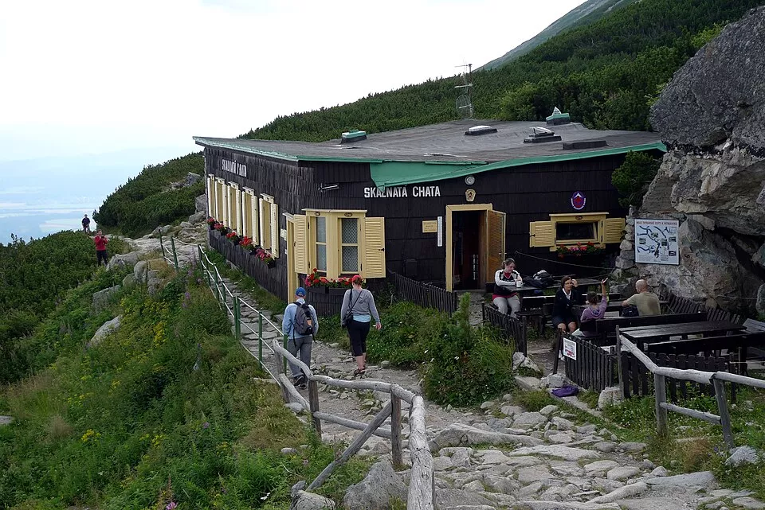

O nasi chate
Naše horská chata je ideálním místem pro všechny, kteří chtějí utéct od každodenního shonu, nadechnout se čerstvého horského vzduchu a užít si pořádnou dávku pohody. Čeká vás krásná příroda, výhledy na majestátní hory, útulné ubytování a domácí kuchyně, po které se vám budou sbíhat sliny. Ať už jste vášniví turisté, milovníci zimních sportů, nebo jen hledáte místo, kde si konečně odpočinete, u nás jste správně.
Kde končí signál, začíná pohoda! U nás nemusíte řešit pracovní e-maily ani nekonečné telefonáty. Místo toho si můžete vychutnat šálek horkého čaje, večer posedět s přáteli u dobrého jídla a zapomenout na všechny starosti. A pokud vás přepadne lenost? Nevadí! I cesta od postele ke guláši se počítá jako horská expedice. Tak sbalte batohy, dobrou náladu a vyrazte k nám za zážitky, na které budete ještě dlouho vzpomínat!

Ubytovani
Užijte si pohodový pobyt v útulných pokojích s výhledem na krásnou horskou přírodu. Po dni plném výletů si odpočinete v příjemném prostředí naší horské chaty.
Cena: od 850 Kč / osoba / noc
Stravovani
Dopřejte si poctivou domácí kuchyni, která vás zahřeje i po náročném výšlapu. Nabízíme vydatné snídaně, tradiční česká jídla, domácí polévky a sladké dezerty.
Cena: od 250 Kč / osoba / den
Vylety
Objevujte krásy hor pěšky, na kole nebo při zimních sportech. Poradíme vám s výběrem tras pro začátečníky i zkušené turisty. Ty nejkrásnější výhledy na vás čekají za každým kopcem!
Cena: od 0 Kč – pěší výlety po okolí
Kontaktni udaje
- Adresa: V horach 420/69, 420 69
- Email: chatavhorach@zima.com
- Tel: +420 123 456 789